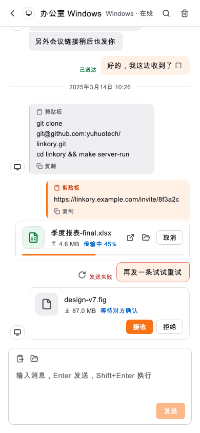

文字与链接，随手送达。
文字、链接、剪贴板内容，在同一账号的设备间互发。不同城市、不同网络也可以；对方离线，消息上线后补发。
一段文字、一个链接、一份文件。
从手边这台，送到你需要的那台。局域网或互联网，都可以。
Windows · macOS · Linux · Android / 免费 · MIT 开源

少一点绕路，多一点顺手
不用把自己当联系人，
也不用为了传个文件，先上传到网盘。
文字、链接、剪贴板内容，在同一账号的设备间互发。不同城市、不同网络也可以；对方离线，消息上线后补发。
照片、文档或大文件，拖拽或选择即可发送。看得见进度与速度，接收后校验完整性，传输过程有据可循。
同一局域网内，文件优先走 P2P 加密直连；连接不可用时自动回退服务器中转。跨网络传输，不局限于同一个 Wi-Fi。
使用官方中转服务，或连接自己部署的服务器。同一套客户端，两种选择，让你的设备在你选择的服务上相遇。
直连双方进行身份互证，数据使用 ChaCha20-Poly1305 加密。
文件以流的方式转发；接收端校验 SHA-256，确认完整后保存。
应用内更新验证 Ed25519 签名与文件哈希，国内加速下载也遵循相同校验。
文字消息会存储于服务器。未送达消息默认保留 30 天，已送达历史当前无自动过期清理。跨网络中转不等同于端到端加密，公网自建服务应配置 HTTPS。
从现在开始，让设备相遇
下载对应平台的客户端。电脑、手机，至少准备两台设备。
选择官方中转或输入自建服务器地址。注册一次，其他设备登录同一个账号。
在会话列表找到另一台设备，发文字、粘贴链接，或拖入文件。
官方服务地址：https://linkory.yuhuotech.com · 旧地址 https://linkory.dev99.cn 继续可用，两个地址连接同一服务。
让下一次传递，更顺手
x64 · 安装程序 / 便携版
下载安装程序 CI 构建通过，欢迎实机反馈Apple 芯片 · DMG
下载 macOS 版 具体安装说明见对应 Releasex64 · DEB / TAR.GZ
下载 DEB 安装包 适用于 Debian / UbuntuAPK · 直接安装
下载 Android 版 允许安装来源，签名说明见 ReleaseiOS 暂未提供安装包。安装后可在「设置 → 软件更新」中升级；下载源访问不畅时，可在应用内切换「国内加速」。
不必。只要设备都能连接同一台连信服务器，并登录同一账号，就可以跨网络互发消息和传输文件。局域网内的文件会优先使用加密直连。
客户端与服务端以 MIT 许可证开源。你可以免费下载、使用与自建；自建服务器的主机与网络费用由你承担。
中转文件仅作流式转发，不在服务器落盘。文字消息会存入数据库，用于历史记录与离线补发，未送达消息默认超过 30 天后清理，已送达历史当前没有自动过期清理。客户端删除仅隐藏本机消息。这两种数据的处理方式不同，详见隐私政策。
可以。服务端是 Go 应用，配合 MySQL，可用二进制或 Docker Compose 部署。配置公网 HTTPS 后，在各客户端选择自建服务器并输入相同地址。查看完整部署说明 ↗
请确认两台设备连接同一服务器，登录同一账号，并且网络可用。不同服务器的账号和设备列表不互通。
下一次，不必再问“怎么发到另一台设备”。
下载连信